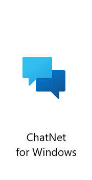

ChatNet for Windows
ChatNet is a powerful local network communication solution. This free, compact edition designed for those who simply need to listen in is great for quick updates or briefings. With this client-only edition, you can view all messages sent by any ChatNet server on the network. (Server capabilites only available when sold as part of OneDesk Pro.)
v. 3.1.0.0 (cnw3.1.0.0)

Download for Windows:
WebSurf
Introducing WebSurf, the powerful yet simple web browser for everyone!
v. 1.2.0.6 (websurf1.2.0.6)

Download for Windows:
Minecraft Python Edition
Create, Explore, Survive with Minecraft Python Edition! Fast and fun, this game can provide hours of entertainment in the blocky world of Minecraft!
v. 0.1.15 Alpha Prerelease (mcpy0.1.15A-pre), Launcher v1.0

Download for Windows:
Can't install? Try this!